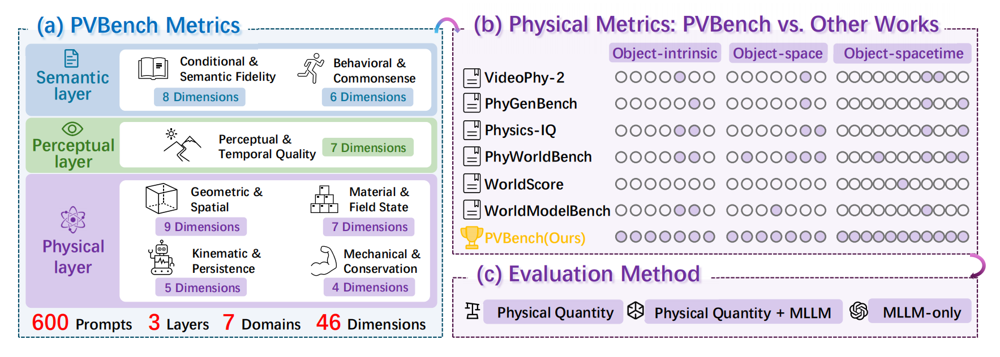
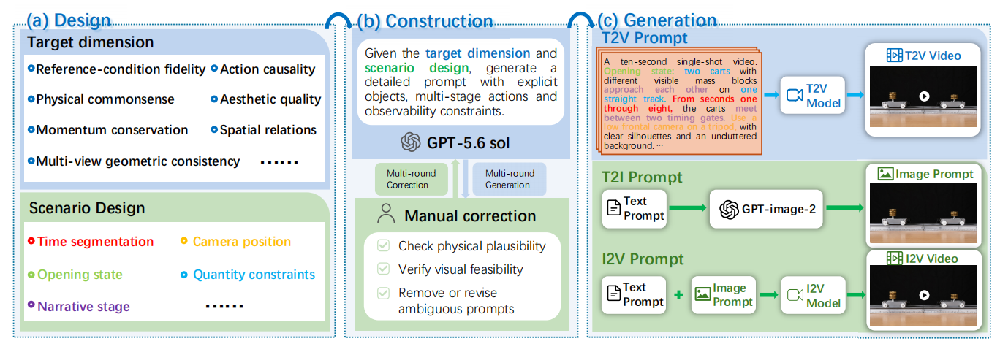

600
paired prompt groups
600 carefully designed scenes, each with matched T2V and I2V variants.
Modern video generators can produce visually compelling results while still violating geometry, kinematics, dynamics, and conservation laws. PVBench turns these failures into measurable object-level quantities.
600 carefully designed scenes, each with matched T2V and I2V variants.
Three assessment layers organized across seven domains.
Object-intrinsic properties, object–space relations, and dynamics across space and time.
180 of 600 prompts (30%) feature robot arms, humanoids, quadrupeds, or multi-agent systems.
PVBench evaluates 46 dimensions across seven domains and three layers. Physical quantities are measured numerically when possible, checked against physical laws, and supplemented by Qwen3.8-27B when direct measurement is difficult.

Condition and semantic fidelity (CSF), plus behavioral, causal, and commonsense consistency (BC).
Perceptual and temporal quality (PTQ): subject consistency, aesthetics, motion smoothness, flicker, dynamics, background, and imaging quality.
Four domains: geometry and spatial consistency (GS), material properties and field states (MFS), kinematics and spatiotemporal persistence (KP), and mechanical plausibility and conservation laws (MC).
17 specialized-model quantitative evaluations · 4 hybrid measurement + MLLM judgments · 4 pure MLLM semantic scores
Each of the 600 prompt groups binds target dimensions to a physically observable scene; T2V and I2V variants share the same initial scene.


PVBench reports percentile scores for six models in both T2V and I2V. Radar plots and layer-level score maps make the gap between visual quality and physical plausibility directly comparable.

| Config. | Model | Semantic layer | Perceptual layer | Physical layer | ||||
|---|---|---|---|---|---|---|---|---|
| CSF | BC | PTQ | GS | MFS | KP | MC | ||
| T2V | SANA-Video 2.0 | 55.1 | 39.0 | 58.2 | 47.0 | 27.4 | 52.2 | 18.7 |
| Wan2.1 | 64.8 | 43.7 | 63.4 | 50.6 | 16.4 | 55.3* | 24.8 | |
| Wan2.2 | 73.1 | 53.6 | 68.1* | 49.2 | 18.1 | 52.9 | 20.5 | |
| LingBot-Video | 72.8 | 59.8 | 58.0 | 42.8 | 28.9 | 51.1 | 22.5 | |
| MiniMax H3 | 88.0* | 79.3* | 55.4 | 52.6 | 30.8* | 51.5 | 25.3* | |
| Seedance 2.5 | 92.2 | 83.3 | 68.4 | 52.2* | 47.2 | 55.6 | 30.0 | |
| I2V | SANA-Video 2.0 | 56.0 | 22.9 | 48.4 | 35.8 | 21.3 | 48.0 | 19.5 |
| Wan2.1 | 84.6 | 41.1 | 59.2 | 40.9 | 28.0 | 53.9 | 24.0 | |
| Wan2.2 | 88.6 | 55.1 | 66.6* | 45.8 | 31.1 | 52.6 | 23.6 | |
| LingBot-Video | 80.2 | 61.8 | 58.1 | 50.8 | 33.4 | 60.7 | 26.8* | |
| MiniMax H3 | 92.8* | 79.9 | 62.5 | 48.9 | 34.2* | 50.7 | 20.1 | |
| Seedance 2.5 | 96.8 | 79.7* | 67.7 | 50.3* | 43.4 | 54.4* | 29.0 | |
CSF: Conditional & Semantic Fidelity · BC: Behavioral, Causal & Commonsense · PTQ: Perceptual & Temporal Quality · GS: Geometric & Spatial · MFS: Material Properties & Field States · KP: Kinematic & Spatiotemporal Persistence · MC: Mechanical Plausibility & Conservation Laws. Bold marks the highest score within each configuration; * marks the second-highest.
Browse one physical case at a time and compare five video-generation models. Switch between T2V and I2V while the key prompt, physical dimension, and evaluation method stay visible beside the videos.
Selected prompt preview appears here.
PVBench helps researchers move from “looks good” to “obeys the world.” Explore the evaluation code on GitHub and read the paper on arXiv.
PVBench is available on arXiv: https://arxiv.org/abs/2610.26711.
@article{chen2026pvbench,
title = {PVBench: Quantifying Physical Plausibility in Video Generation with Object-Level Physical Measurements},
author = {Chen, Kaiwei and Li, Moran and Gan, Zhenye and Wang, Yabiao and Wang, Chengjie and Zhang, Kexin and Liu, Yong and Zhang, Jiangning},
year = {2026},
eprint = {2610.26711},
archivePrefix = {arXiv},
url = {https://arxiv.org/abs/2610.26711}
}